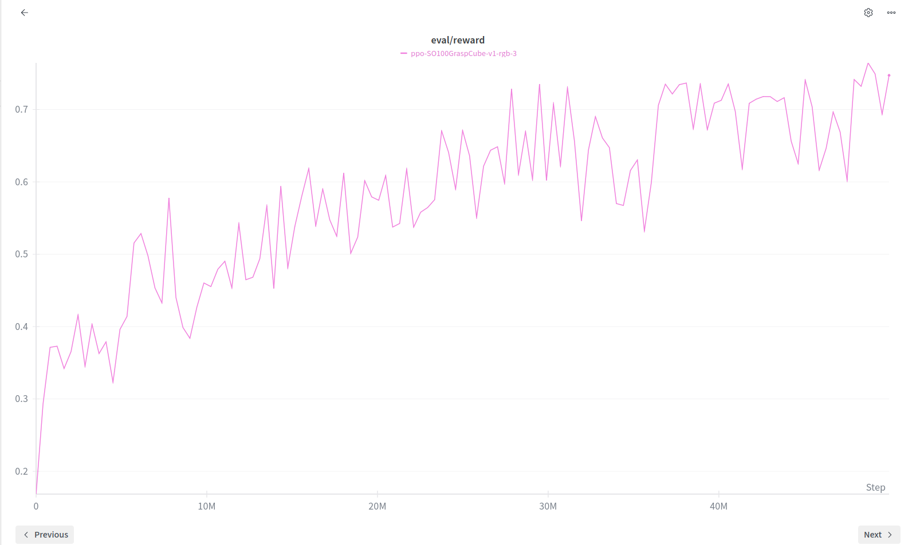

🤖 RLFFP — Robot Learning from First Principles
From simulation to reality: teaching a robot arm to pick, think, and adapt.
Explore on GitHub🔬 What's This Project About?
Frontier research endeavour to implement Flow Policy Optimization (FPO) for sim2real zero-shot deployment, comparing its effectiveness against baseline Proximal Policy Optimization (PPO) for the challenging cube pickup task.
📸 Project Gallery

The SO100 arm tackling the PickCube task in MuJoCo simulation.

Evaluation rewards during PPO training showing consistent improvement.

The same policy transferred to real hardware — picking cubes in the physical world.